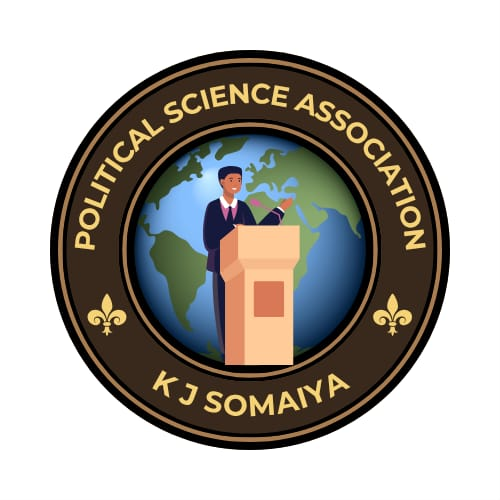

Department of Political Science, KJSAC
OFFICIAL DIGITAL PUBLICATION
What began as a passionate political pursuit, the Political Science Association has evolved into an all-round platform, showcasing student-authored essays, political insights, and curated readings, all focused around geopolitics, public policies and governance. Today, this space features informed discourse that challenges novice perspectives, and creates strong foundations for the ever-dynamic global landscape.
Explore ArchivePRISM is the official digital publication of the Department of Political Science, K.J. Somaiya College of Arts & Commerce. It serves as a platform for informed student voices on politics, governance, public policy and international affairs.